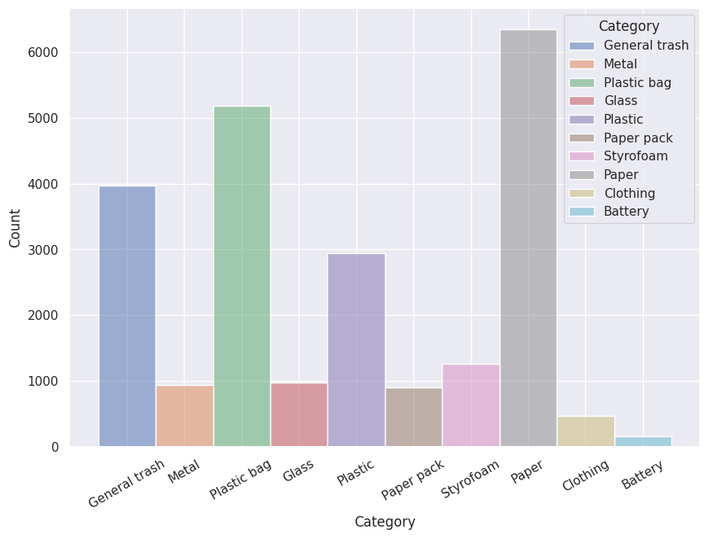
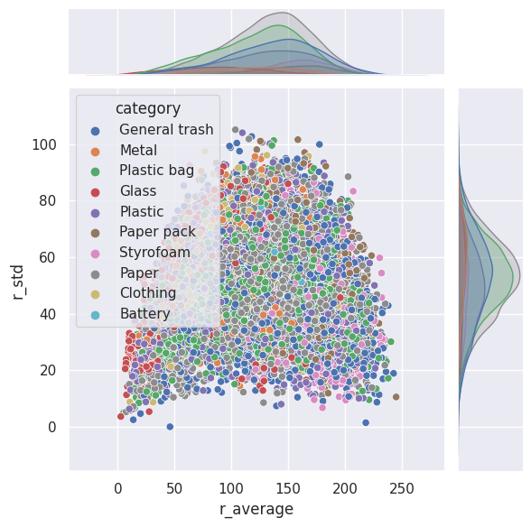
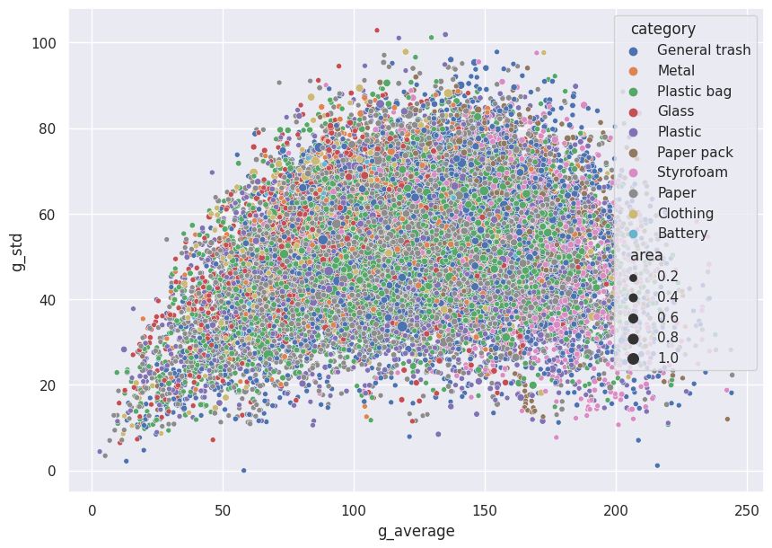
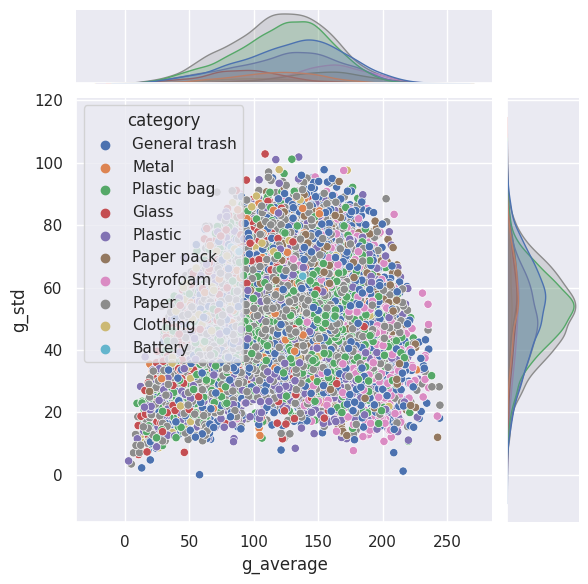
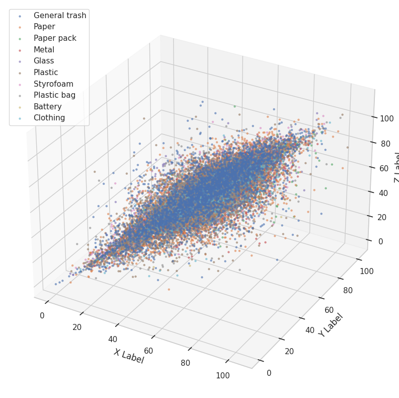
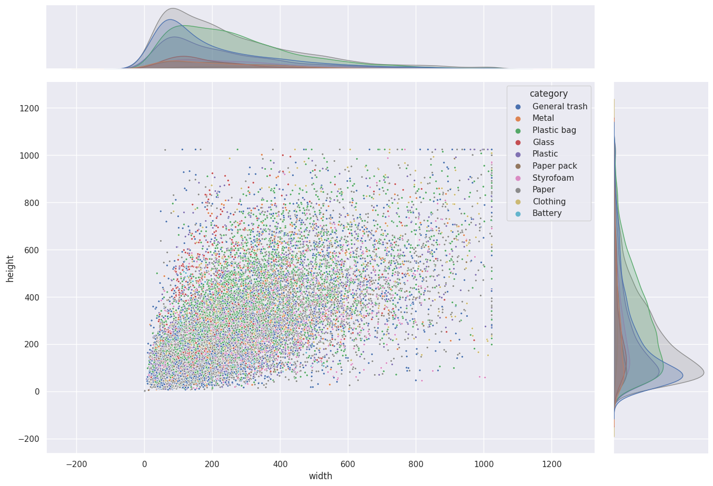
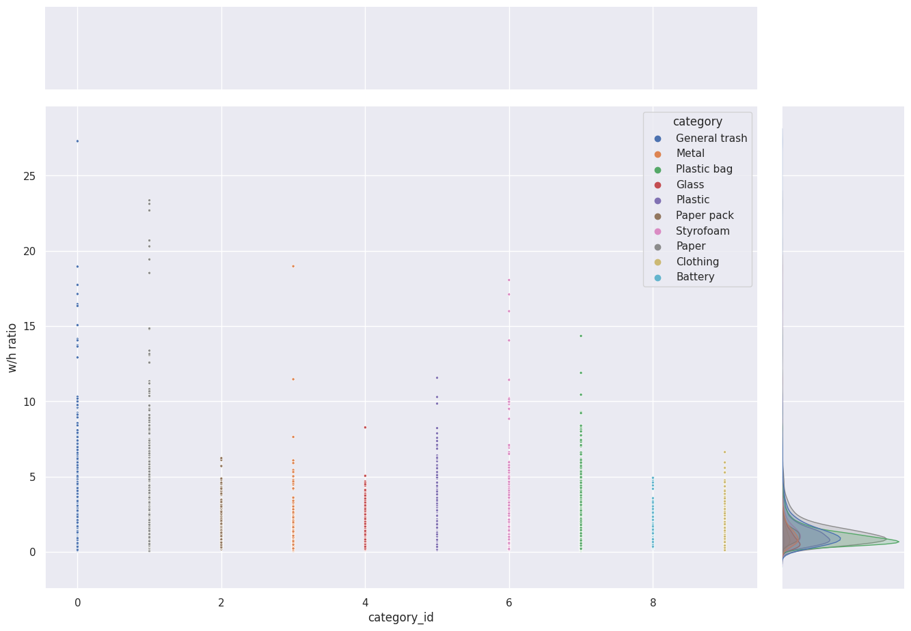

대회개요
소개
바야흐로 대량 생산, 대량 소비의 시대. 우리는 많은 물건이 대량으로 생산되고, 소비되는 시대를 살고 있습니다. 하지만 이러한 문화는 ‘쓰레기 대란’, ‘매립지 부족’과 같은 여러 사회 문제를 낳고 있습니다.

분리수거는 이러한 환경 부담을 줄일 수 있는 방법 중 하나입니다. 잘 분리배출 된 쓰레기는 자원으로서 가치를 인정받아 재활용되지만, 잘못 분리배출 되면 그대로 폐기물로 분류되어 매립 또는 소각되기 때문입니다.
따라서 우리는 사진에서 쓰레기를 Detection 하는 모델을 만들어 이러한 문제점을 해결해보고자 합니다. 문제 해결을 위한 데이터셋으로는 일반 쓰레기, 플라스틱, 종이, 유리 등 10 종류의 쓰레기가 찍힌 사진 데이터셋이 제공됩니다.
여러분에 의해 만들어진 우수한 성능의 모델은 쓰레기장에 설치되어 정확한 분리수거를 돕거나, 어린아이들의 분리수거 교육 등에 사용될 수 있을 것입니다. 부디 지구를 위기로부터 구해주세요! 🌎
- Input : 쓰레기 객체가 담긴 이미지가 모델의 인풋으로 사용됩니다. 또한 bbox 정보(좌표, 카테고리)는 model 학습 시 사용이 됩니다. bbox annotation은 COCO format으로 제공됩니다. (COCO format에 대한 설명은 학습 데이터 개요를 참고해주세요.)
- Output : 모델은 bbox 좌표, 카테고리, score 값을 리턴합니다. 이를 submission 양식에 맞게 csv 파일을 만들어 제출합니다. (submission format에 대한 설명은 평가방법을 참고해주세요.)
평가방법
-
모델 제출은 하루 10회로 제한됩니다.
-
Test set의 mAP50(Mean Average Precision)로 평가
-
Object Detection에서 사용하는 대표적인 성능 측정 방법
-
Ground Truth 박스와 Prediction 박스간 IoU(Intersection Over Union, Detector의 정확도를 평가하는 지표)가 50이 넘는 예측에 대해 True라고 판단합니다.
-
Example of IoU

-
metric


-
Example of mAP50

- Orange
- TP = 1, FP = 1, FN = 0
- 총 2개의 Orange 박스 중 하단의 박스 1개는 객체를 잘 detection하였습니다.(TP) 상단의 박스 1개는 Blue category에 해당하는 객체를 Orange category로 예측하였기 때문에 잘못된 detection입니다. (FP)
- Precision_Orange = 1 / (1 + 1) = 0.5
- Recall_Orange = 1 / (1 + 0) = 1
- Blue
- TP = 2, FP = 1, FN = 3
- 총 3개의 Blue 박스 중 두 개의 박스는 객체를 잘 detection하였습니다.(TP) 우측 하단의 박스는 객체 위치를 정확히 detection하지 못했습니다. (FP)
- Precision_Blue = 2 / (2 + 1) = 0.66
- Recall_Blue = 2 / (2 + 3) = 0.4
- Orange
이후 각 클래스별(Orange, Blue) AP는 PR curve를 통해서 계산됩니다.
모든 이미지의 각 클래스별 AP 계산 후, 평균내어 최종 점수가 구해집니다.
-
-
제출 방법
-
베이스라인 코드 실행
-
submission.csv 제출
PredictionString = (label, score, x_min, y_min, x_max, y_max), …
-
- COCO가 아닌 Pascal VOC 포맷입니다.

-
-
세부 일정
- V100 GPU 서버 제공 (1인 1GPU) : 11/14 (월) 10:00
- 팀 병합 기간 : 11/14 (월) 10:00 ~ 11/15 (화) 16:00
- 팀명 컨벤션 : 도메인_팀번호(2자리)조 / ex) CV__03조, NLP__02조, RecSys__08조
- 유의사항 : 한 번 결성한 팀은 다시 해체할 수 없기 때문에 신중하게 초대 부탁드립니다.
- 대회 기간 : 11/14 (월) 10:00 ~ 12/1 (목) 19:00
- 리더보드 제출 오픈 : 11/16 (수) 10:00
- 최종 리더보드 (Private) 공개 : 12/1 (목) 19:00
- V100 GPU 서버 회수 : 12/2 (금) 16:00
- 대회 솔루션 발표 : 마스터클래스 일정 참조
대회 룰
- [대회 참여 제한] CV 도메인을 수강하고 있는 캠퍼에 한하여 리더보드 제출이 가능합니다.
- [팀 결성 기간] 팀 결성은 대회 시작 2일차 화요일 오후 4시까지 필수로 진행합니다. 팀이 완전히 결성되기 전까지는 리더보드 제출이 불가합니다.
- [일일 제출횟수] 일일 제출횟수는 팀 단위 10회로 제한합니다. (일일횟수 초기화는 자정에 진행)
- [외부 데이터셋 규정] 본 대회에서는 외부 데이터셋 사용을 금지합니다. (외부 데이터에 의존하는 것이 아니라, 주어진 데이터셋을 기반으로 모델링 성능 개선에 집중해 보시길 바랍니다)
- [사전학습 가중치 사용 규정] 아래 데이터셋으로 학습된 가중치만 허용됩니다. (pretrained weight)
- 이미지넷 (https://www.image-net.org/)
- 코코 데이터셋 (https://cocodataset.org/)
- 파스칼 VOC 데이터셋 (http://host.robots.ox.ac.uk/pascal/VOC/index.html)
- [테스트셋 활용 허용 여부] 대회 테스트셋은 자유롭게 활용 가능하나 (EDA, pseudo-labeling 등), 정답을 매뉴얼하게 파악 후 코드로 심는 행위는 허용하지 않습니다. 즉, 눈으로 직접 판별 후 라벨링 하는 행위는 금지합니다.
- [데이터셋 저작권] 대회 데이터셋은 ‘캠프 교육용 라이선스’ 아래 사용 가능합니다. 저작권 관련 세부 내용은 부스트코스 공지사항을 반드시 참고 해주세요.
AI Stages 대회 공통사항
- [Private Sharing 금지] 비공개적으로 다른 팀과 코드 혹은 데이터를 공유하는 것은 허용하지 않습니다.코드 공유는 반드시 대회 게시판을 통해 공개적으로 진행되어야 합니다.
- [최종 결과 검증 절차] 리더보드 상위권의 경우 추후 최종 코드 검수가 진행됩니다. 반드시 결과가 재현될 수 있도록 최종 코드를 정리해 주세요! 부정행위가 의심될 경우에는 결과 재현을 요구할 수 있으며, 재현이 어려울 경우 리더보드 순위표에서 제외될 수 있습니다.
- [공유 문화] 공개적으로 토론 게시판을 통해 모델링에 대한 아이디어 혹은 작성한 코드를 공유하실 것을 권장 드립니다. 공유 문화를 통해서 더욱 뛰어난 모델을 대회 참가자 분들과 같이 개발해 보시길 바랍니다.
- [대회 참가 기본 매너] 좋은 대회 문화 정착을 위해 아래 명시된 행위는 지양합니다.
- 대회 종료를 앞두고 (3일 전) 높은 점수를 얻을 수 있는 전체 코드를 공유하는 행위
- 타 참가자와 토론이 아닌 단순 솔루션을 캐내는 행위
학습데이터
우리는 수많은 쓰레기를 배출하면서 지구의 환경파괴, 야생동물의 생계 위협 등 여러 문제를 겪고 있습니다. 이러한 문제는 쓰레기를 줍는 드론, 쓰레기 배출 방지 비디오 감시, 인간의 쓰레기 분류를 돕는 AR 기술과 같은 여러 기술을 통해서 조금이나마 개선이 가능합니다.
제공되는 이 데이터셋은 위의 기술을 뒷받침하는 쓰레기를 판별하는 모델을 학습할 수 있게 해줍니다.
데이터셋 통계
- 전체 이미지 개수 : 9754장
- 10 class : General trash, Paper, Paper pack, Metal, Glass, Plastic, Styrofoam, Plastic bag, Battery, Clothing
- 이미지 크기 : (1024, 1024)
예제) image, target 시각화

annotation file
annotation file은 coco format 으로 이루어져 있습니다.
coco format은 크게 2가지 (images, annotations)의 정보를 가지고 있습니다.
- images:
- id: 파일 안에서 image 고유 id, ex) 1
- height: 1024
- width: 1024
- file_name: ex) train_/002.jpg
- annotations: (참고 : detection 대회에서는 아래의 모든 정보를 활용 가능합니다.)
- id: 파일 안에 annotation 고유 id, ex) 1
- bbox: 객체가 존재하는 박스의 좌표 (x_min, y_min, w, h)
- area: 객체가 존재하는 박스의 크기
- category_id: 객체가 해당하는 class의 id
- image_id: annotation이 표시된 이미지 고유 id
competition에서 사용되는 데이터&코드의 전체 구성
├── detectron2
│ ├── faster_rcnn_train.ipynb
│ ├── faster_rcnn_inference.ipynb
│ └── etc
├── faster_rcnn
│ ├── faster_rcnn_torcchvision_train.ipynb
│ ├── faster_rcnn_torchvision_inference.ipynb
├── mmdetection
│ ├── faster_rcnn_train.ipynb
│ ├── faster_rcnn_inference.ipynb
│ └── etc
└── dataset
├── train.json
├── test.json
├── train
└── test- detectron2
- 해당 폴더에는 detectron2 library file들이 존재
- faster_rcnn_train.ipynb 노트북 파일로 train data 학습 및 model weight를 저장
- faster_rcnn_inference.ipynb 노트북 파일로 test data inference 및 submission file 생성
- mmdetection
- 해당 폴더에는 mmdetection library file들이 존재
- faster__rcnn_train_.ipynb 노트북 파일로 train data 학습 및 model weight를 저장
- faster_rcnn_inference.ipynb 노트북 파일로 test data inference 및 submission file 생성
- faster_rcnn
- faster__rcnn_torchvision_train.ipynb: torchvision library를 활용하여 faster rcnn 학습 및 model weight 저장_
- faster_rcnn_torchvision_inference.ipynb: torchvision libarary를 활용하여 faster rcnn inference 및 submission file 생성
- dataset
- train: 4883장의 train image 존재
- test: 4871장의 test image 존재
- train.json: train image에 대한 annotation file (coco format)
- test.json: test image에 대한 annotation file (coco format)
평가데이터
학습 데이터와 평가 데이터는 각각 이미지 4883장, 4871장입니다.
- public (대회 진행중)
- test.json으로 만든 submission csv 중에 public 데이터만 평가됩니다. 이 때 public 데이터는 평가 데이터의 약 50% 입니다.
- private (대회 종료후)
- test.json으로 만든 submission csv 파일을 통해 모든 평가 데이터가 평가됩니다. 이에 따라 최종 순위가 결정됩니다.
평가 데이터는 test 폴더안의 이미지들과 test.json 으로 구성되어 있으며, 학습 데이터와는 다르게 annotation 정보가 포함되어 있지 않고 이미지 정보만 가지고 있습니다.
베이스라인 코드 및 제출방법
File Structure
├── baseline
│ ├── detectron2
│ ├── faster_rcnn
│ ├── mmdetection
│ └── requirements.txt
├── dataset
│ ├── test
│ ├── test.json
│ ├── train
│ └── train.json
├── mission
│ └── ...
└── sample_submission
├── faster_rcnn_mmdetection_submission.csv
├── faster_rcnn_torchvision_submission.csv
├── submission_ensemble.csv
└── train_sample.csv위와 같은 file structure를 가지고 있습니다.
Conda 가상환경
detection: mmdetection, detectron2를 실행시키기 위한 가상환경
Submission
-
제출 방법 1 - faster rcnn torchvision (https://pytorch.org/vision/stable/models.html#object-detection-instance-segmentation-and-person-keypoint-detection)torchvision에서 제공되는 faster rcnn object detection model을 활용하여 학습합니다.
- faster__rcnn_torchvision__train.ipynb를 실행합니다.
- faster__rcnn_torchvision__inference.ipynb를 실행합니다.
- 생성된 faster_rcnn_torchvision_submission.csv을 제출합니다.
-
제출 방법 2 - mmdetection(https://github.com/open-mmlab/mmdetection)
└── mmdetection ├── mmdet ├── config ├── tools ├── work_dirs ├── faster_rcnn_train.ipynb ├── faster_rcnn_inference.ipynb └── etc-
mmdet : 실제 모델들이 작성되어 있는 곳. faster rcnn 등 강의에서 다루는 여러 모델들이 구현되어 있음
-
config : config를 통해 mmdet 모델들을 조합
-
tools: train.py, test.py 등 라이브러리를 이용할 때 참고할 수 있는 베이스라인 코드가 구현되어 있음+ train, inference 코드, 라이브러리에 대한 상세 설명은 3강 강의 영상 참고 바랍니다.
- mmdetection folder의 faster__rcnn_train.ipynb를 실행합니다._
- work_dirs 폴더에 생성된 faster_rcnn weight를 이용해 faster_rcnn_inference.ipynb 실행합니다.
- work__dirs 폴더에 생성된_ submission csv file을 제출합니다.
-
-
제출 방법 3 - Detectron2(https://github.com/facebookresearch/detectron2)
└── detectron2 ├── detectron2 ├── config ├── tools ├── faster_rcnn_train.ipynb ├── faster_rcnn_inference.ipynb └── etc-
detectron2 : 실제 모델들이 작성되어 있는 곳. faster rcnn 등 강의에서 다루는 여러 모델들이 구현되어 있음
-
config : config를 통해 detectron2 모델들을 조합
-
tools: train_net.py, visualize_.py 등 라이브러리를 이용할 때 참고할 수 있는 베이스라인 코드가 구현되어 있음+ train, inference 코드, 라이브러리에 대한 상세 설명은 3강 강의 영상 참고 바랍니다.
- detectron2 폴더 내의 faster__rcnn_train.ipynb 파일을 실행합니다._
- output 폴더에 생성된 faster__rcnn weight를 이용해 faster_rcnn_inference.ipynb 파일을 실행합니다._
- output 폴더에 생성된 submission csv file을 제출합니다.
-
How to install?
- 데이터셋 다운로드
-
data 구성

-
train, test folder 안에 이미지 존재
-
train.json은 이미지의 annotation 정보를 포함하며 train에 사용
-
test.json은 이미지의 annotation 정보를 포함하지 않으며, submission file을 만드는데 사용
-
- 라이브러리 설치 (기존 할당 받은 서버에는 자동으로 설치)
-
faster rcnn naive version 설치
pip install -r requirements.txt -
mmdetection library 설치
conda install pytorch=1.7.1 cudatoolkit=11.0 torchvision -c pytorch pip install openmim mim install mmdet -
detectron2 설치
python -m pip install -e detectron2
-
EDA
Raw Image Size Analysis
목적
Train/Test에 사용하는 모든 Raw Image의 size를 확인
Json에도 size가 적혀 있지만, 확실히 확인하기 위해 직접 load 및 확인을 진행
결과 - Train Dataset
| width | height | license | id | width_real | height_real | |
|---|---|---|---|---|---|---|
| count | 4883.0 | 4883.0 | 4883.0 | 4883.000000 | 4883.0 | 4883.0 |
| mean | 1024.0 | 1024.0 | 0.0 | 2441.000000 | 1024.0 | 1024.0 |
| std | 0.0 | 0.0 | 0.0 | 1409.745012 | 0.0 | 0.0 |
| min | 1024.0 | 1024.0 | 0.0 | 0.000000 | 1024.0 | 1024.0 |
| 25% | 1024.0 | 1024.0 | 0.0 | 1220.500000 | 1024.0 | 1024.0 |
| 50% | 1024.0 | 1024.0 | 0.0 | 2441.000000 | 1024.0 | 1024.0 |
| 75% | 1024.0 | 1024.0 | 0.0 | 3661.500000 | 1024.0 | 1024.0 |
| max | 1024.0 | 1024.0 | 0.0 | 4882.000000 | 1024.0 | 1024.0 |
결과 - Test Dataset
| width | height | license | id | width_real | height_real | |
|---|---|---|---|---|---|---|
| count | 4871.0 | 4871.0 | 4871.0 | 4871.000000 | 4871.0 | 4871.0 |
| mean | 1024.0 | 1024.0 | 0.0 | 2435.000000 | 1024.0 | 1024.0 |
| std | 0.0 | 0.0 | 0.0 | 1406.280911 | 0.0 | 0.0 |
| min | 1024.0 | 1024.0 | 0.0 | 0.000000 | 1024.0 | 1024.0 |
| 25% | 1024.0 | 1024.0 | 0.0 | 1217.500000 | 1024.0 | 1024.0 |
| 50% | 1024.0 | 1024.0 | 0.0 | 2435.000000 | 1024.0 | 1024.0 |
| 75% | 1024.0 | 1024.0 | 0.0 | 3652.500000 | 1024.0 | 1024.0 |
| max | 1024.0 | 1024.0 | 0.0 | 4870.000000 | 1024.0 | 1024.0 |
결론
Train/Test 이미지는 모두 동일한 크기로 되어있다.
Category Histogram Analysis
목적
TrainSet Image 내에서 Category 분포를 확인, Detection해야 하는 Class가 얼마나 고르게 분포되어 있는지 확인한다.
결과

결론
심한 Class Imbalance를 가진 Dataset이다.
RGB Component Analysis by Category
목적
TrainSet Image 내에서 각 ROI별 RGB 분포를 확인, Category별로 라벨링 하어 경향성이 존재하는지 확인한다.
결과 - Average, Std by Channel for red


결과 - Average, Std by Channel for green


결과 - Average, Std by Channel for blue


결과 - RGB Average

결과 - RGB Mean

결과 - RGB Std.

결론
ROI로 Crop해서 분석했지만, 여전히 배경성분이 포함되어 있어서인지 Class별 차이가 크게 없었다.
하지만 그럼에도, 카테고리별 분포의 차이는 보였다.
Annotation per Image Analysis
목적
이미지 하나에 얼마나 많은 bbox가 존재하는지, 그리고 얼마나 많은 종류의 bbox가 이미지 하나에 존재하는지 확인해본다.
결과 - Category Count / Count


결론
예측해야 하는 Class는 총 10개(배경 포함)인데, 대부분 1~3개의 Category, 10개 이하의 bbox를 가지고 있었다.
하지만, 그와 반대로 매우 많은 bbox를 가지고 있는 경우도 존재했다.
또한 가장 우측 상단에 있는 case(bbox70 & category 7)의 경우 과연 제대로 된 라벨링을 한 것인지 의문이 든다.
데이터를 다시 정제해야 하는 것인지 고민된다.
Size Analysis by Category
목적
Train Dataset의 모든 Annotation을 조사해서, 각 Annotation의 크기를 확인해본다.
결과 - Width & Height

결과 - Category ID & W/H ratio

결론
너무 다양한 분포의 bbox가 존재하고 있다.
또한 0에 가까운 bbox나 50pixel도 되지 않는 bbox, 이미지 크기를 다 채우는 bbox도 존재했다.
Model 탐색
-
faster_rcnn | submission mAp : 0.4188
대회측에서 제공한 base line code
-
SSD300 AdamW | submission mAp : 0.2077
AdamW를 사용해서 훈련한 결과
생각보다 너무 성능이 낮아서 놀랐다
Lr Scheduler의 문제인가 의심되었다 -
SSD300 SGD | submission mAp : 0.3946
SGD를 사용하여 다시 훈련한 결과
드리어 baseline 결과에 근접했다
이미지의 원본 입력 Size는 1024x1024이며, SSD300의 입력사이즈는 300x300이므로, 약 1/3의 Down Sizing이 발생한다.SSD의 Extra Feature Layers를 통해 다양한 크기의 Classify를 수행할 수 있어도, 3x3 크기 이하의 object는 크게 의미가 없다고 생각된다.
따라서 원본 기준, 그 3배인 10x10 미만의 bbox는 잡지 못할 것이며, 작은 영역의 bbox는 당연히 검출이 어려울 것이다.
그렇다면, input size를 키우는 것이 유리하다. -
SSD512 SGD | submission mAp : 0.4521
input size를 512로 증가시켜 다시 훈련한 결과
많은 map 상승이 있었다
다른 모델들의 성능은 어떨까?
-
retinanet_r50_fpn_1x AdamW | submission mAp : 0.3375
SGD를 사용하면 훈련이 제대로 되지 않아 AdamW를 사용했다
오랜시간 훈련했음에도, 좋은 결과를 얻지 못했다
네트워크 복잡도가 부족한 것일까? -
retinanet_r101_fpn_1x AdamW | submission mAp : 0.3736
마찬가지로 SGD를 사용했을 때, 훈련이 잘 되지 않아 AdamW로 훈련했다는
기존 r50 backbone 대비, 0.05의 map의 상승이 있었다.
아직 다양한 Backbone을 사용해볼 수 있고, WandB로 본 Loss의 경향으로는 더 성능개선이 가능할 것이라고 생각된다
하지만, SSD보다 너무 많은 시간이 필요해서 비효율적이라도 생각됬다==빠른 실험을 위해 가장 좋은 성능을 얻은 SSD로 모델을 고정하기로 결정했다==
-
SSD512 SGD | fail
Train / validation 을 나누고 batch size를 8→32로 증가시킨 뒤, AMP Dynamic을 적용하여 훈련을 시도했다.
그런데 훈련이 진행되다가 loss가 발산하더니, 모든 loss들이 NaN이 뜨는 일이 발생했다MMDetection Github issue 에서 비슷한 현상을 겪은 case를 발견했다
https://github.com/open-mmlab/mmdetection/issues/3013
GT Box의 area가 0일 경우, 발생할 수 있다고 한다
필요 없는 box의 refine이 필요하다고 생각했다
Data Refine
Drop small annotations
-
model 탐색 3번에서 고민한 내용을 토대로, 가로 혹은 세로가 20 pixel 미만의 feature와 100 pixel^2 미만의 넓이는 가지는 feature를 제외하여 새롭게 trainset을 구성했다
(ssd512의 경우 1/2로 가로, 세로 넓이가 조정되기 때문에 20으로 선정했다) -
모델을 돌려본 결과, 정상적으로 훈련되는 것을 확인했다….만 훈련을 진행하면서 다시 발생했다
다시 Web에서 정보를 수집한 결과,
loss 가 너무 높은 경우 발생할 수 있다고 한다- 해결 방법 : Loss를 감소시키고, Warm up 의 Lr을 조정하는 것을 권장
-
SGD의 Lr을 0.001로 설정했던 것이 원인이었다는 생각이 들었다
경향을 보기 위해 LR를 확 감소시켰다- LR : 0.001 → 0.0001
-
Nan의 발생은 해결했지만, Warm Up이 끝난 후 더 이상 loss가 감소하지 않았다
LR을 추가적으로 더 감소시켰다- LR : 0.0001 → 0.00001
-
LR을 감소시키는 것은, 결과적으로 현명하지 못한 선택이었다
생각해보면, loss가 낮아지지 않는다는 것은 LR이 너무 작다는 것인데, 더 줄인다는 것은 잘못된 판단이었다
LR을 원래대로 변경하고, Wram Up 구간을 증가시켰다-
LR : 0.00001 → 0.001
-
Warm up : 500 → 5000
-
결과, 더 빠르게 Loss가 떨어지는 것을 볼 수 있었다
-
-
그러나, 학습 속도가 생각보다 너무 낮았다
시간이 얼마 남지 않았기 때문에, 기존 모델(SSD512)을 가져와 학습하는 방향으로 전략을 변경했다
이미 훈련된 모델을 불러오는 것이기 때문에, Lr을 1/100으로 낮추고 Warm Up을 제거했다
결과, 크게 의미있는 성능 향상이 없었다- LR : 1e-3 → 1e-5
- Remove Warm up
-
LR이 너무 낮은 것일까? LR을 높여서 진행해 보는 것이 필요해 보인다
또한, 이미 훈련이 많이 진행된 model이기 때문에 epoch을 10까지만 해서 빠르게 실험하는 것이 좋다고 판단되었다-
LR : 1e-5 → 1e-3
-
-
Loss가 발산하는 것이 보인다
LR이 너무 큰거같다-
LR : 1e-3 → 1e-4
-
마찬가지로, 성능개선이 이뤄진다는 채감이 없다
-
-
모델 성능의 한계점에 도달하고, 최소점 근처를 배회하고 있는 것일까?
LR을 확 낮춰보았다- LR : 1e-4 → 1e-6
- 첫 Epoch에서 1e-5로 훈련했을 때와 똑같은 결과를 얻었다 훈련이 거의 되고있지 않다고 추측된다
-
다시 처음부터 분석해보자
성능이 올라가기 위해서는 Loss가 줄어들어야 한다
그렇다면 왜 Loss가 줄어들지 않을까?
기존 실험들의 Total Loss를 살펴보면, 2~3 근처에서 계속 흔들리고 있다
Loss는 BBox 예측에 대한 Loss, Classification에 대한 Loss의 합으로 이루어져 있다
그 중 class에 관련한 loss의 비중이 컸는데, labeling중 기준이 모호한 것이 많았기에 이것이 원인이 아닌가 추측되었다
-
라벨링이 모호한 것이 원인이라고 생각했고 팀원의 도움으로 다시 라벨링한 데이터를 가지고 훈련을 진행했다
- relabeling
- v2 : relabeling + small bbox drop | submission mAp : 0.4538
- drop when bbox width or height < 20
- v3 : relabeling + small bbox drop + big bbox drop | submission mAp : 0.4509
- drop when bbox width or height < 20
- drop when bbox is generaltrash or paper or plastic bag and area > 900000
- v2 : relabeling + small bbox drop | submission mAp : 0.4538
- relabeling
-
결과, 미세한 bbox를 제거했을 때는 약간의 성능 향상이 있었지만, 큰 bbox를 제거했을 때는 성능이 하락했다
Best Score : 0.4538(SSD512)